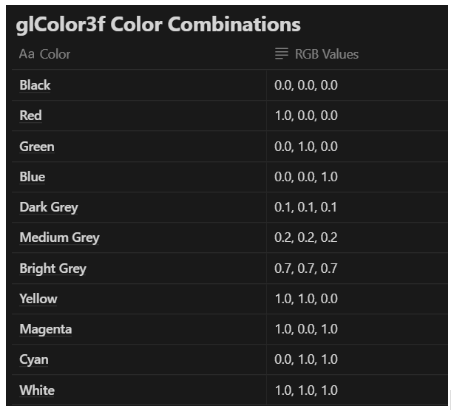
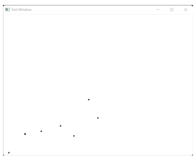

Commands
All the code used to create the OpenGL drawings used the FreeGLUT library, an open-source alternative to the OpenGL Utility Toolkit library. As such, all of them required a couple common instantiations:-
glutInit(&argc, argv);
This function initializes the toolkit and the arguments are the standard ones for passing command-line information.
glutInitDisplayMode(GLUT_SINGLE | GLUT_RGB);
This function specifies how the display should be initialized. GLUT_SINGLE specifies that a single display buffer should be allocated and the colors are specified using desired amounts of red, green and blue.
glutInitWindowSize(640,480);
This function specifies the screen window should be 640 x 480 pixels in dimensions (initially).
glutInitWindowPosition(100,150);
This function specifies the window’s upper left corner should be positioned on the screen 100 pixels from the left edge and 150 pixels from the top edge.
glutCreateWindow(”Testing”);
This function opens and displays the screen window with a title of “Testing”.
Compiler Flags
g++ -Wall -DUSEGLEW -o test testfile.cpp -lfreeglut -lglew32 -lglu32 -lopengl32 -lm
Miscellaneous commands
glColor3f(red, green, blue);
Specifies the current drawing color

- The background is set using glClearColor(red, green, blue, alpha);, where alpha specifies the transparency.
- The above function only sets a state variable, but for the background to actually clear to the set value, glClear(GL_COLOR_BUFFER_BIT); has to be used
- myInit() is a user defined function that was used to set up the coordinate system.
Example of a complete OpenGL Program
#include <windows.h>
#include <GL/Gl.h>
#include <GL/glu.h>
#include <GL/glut.h>
//<<<<<<<<<<<<<<<<<<<<<<<<<<<<<<< myInit >>>>>>>>>>>>>>>>>>>>>>>>>>>>>>>>
void myInit(void) {
glClearColor(1.0, 1.0, 1.0, 0.0);
glColor3f(0.0f, 0.0f, 0.0f);
glPointSize(4.0); // sets the point size to 4 x 4 pixels
glMatrixMode(GL_PROJECTION); // sets up the appropriate matrices
glLoadIdentity();
gluOrtho2D(0.0, 640.0, 0.0, 480.0);
}
//<<<<<<<<<<<<<<<<<<<<<<<<<<<<<<< myDisplay >>>>>>>>>>>>>>>>>>>>>>>>>>>>>>>>
void myDisplay(void) {
glClear(GL_COLOR_BUFFER_BIT); // clears the screen to the previously set color glBegin(GL_POINTS);
glVertex2i(289, 190);
glVertex2i(320, 128);
glVertex2i(239, 67);
glVertex2i(194, 101);
glVertex2i(129, 83);
glVertex2i(75, 73);
glVertex2i(74, 74);
glVertex2i(20, 10);
glEnd();
glFlush(); // send all the output to display
}
//<<<<<<<<<<<<<<<<<<<<<<<<<<<<<<< main >>>>>>>>>>>>>>>>>>>>>>>>>>>>>>>>
int main(int argc, char** argv) {
glutInit(&argc, argv);
int mode = GLUT_RGB|GLUT_SINGLE;
glutInitDisplayMode(mode);
glutInitWindowSize(640,480);
glutInitWindowPosition(100,150);
glutCreateWindow("Test Window");
myInit();
glutDisplayFunc(myDisplay);
glutMainLoop();
}
Output
